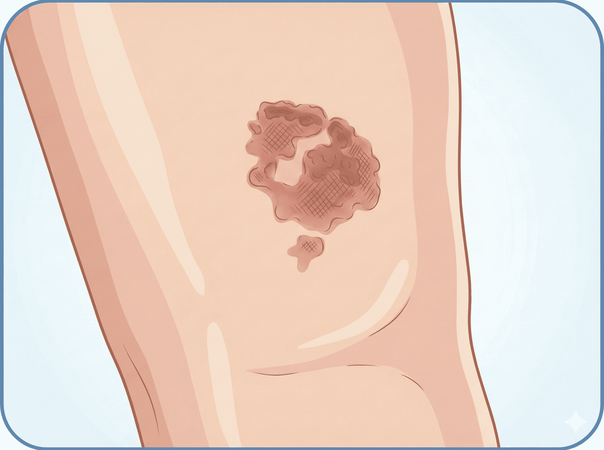
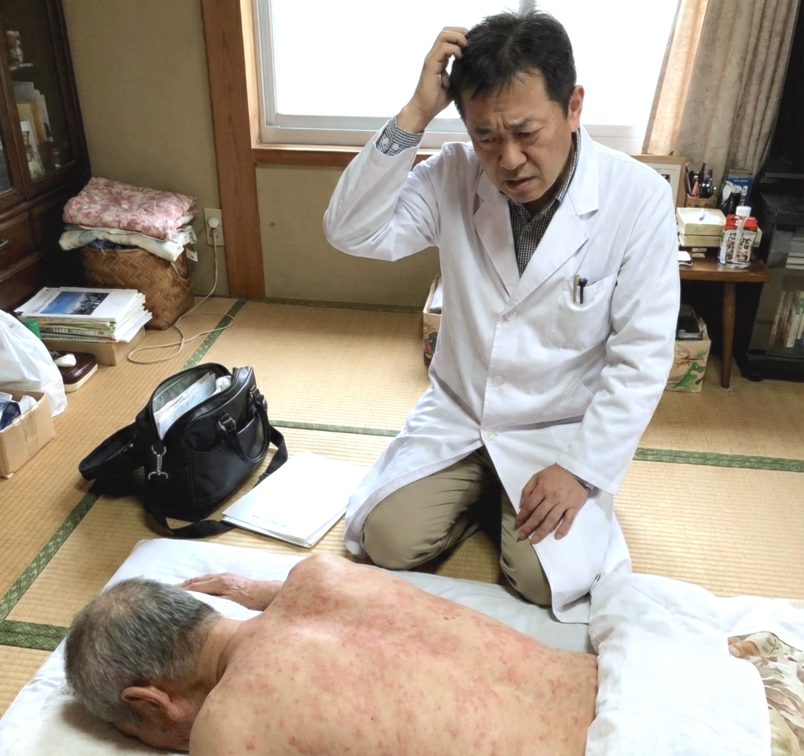

現場で、こんな皮膚トラブルの
判断に迷ったことはありませんか？
「ステロイド、種類が多すぎて何を処方したら良いの？」
強さのランク、基剤の選び方...添付文書を見ても迷ってしまう。

「この褥瘡、自分で診れる範囲の重症度？」
デブリは必要？ゲーベンでいい？処置の方針に自信が持てない。
※実際の画像をここに表示
「この皮膚所見、まさか皮膚癌…！？」
見逃してはいけないサインなのか、老人性イボなのか、判断がつかない。

「待てる状態？すぐ病院に診察を依頼すべき？」
「この程度で紹介したら怒られる？」と遠慮してしまい、タイミングを逃しそうになる。

「皮膚疾患ってどこから手をつけていいか分からない…」
専門外だからこそ感じる、診断への漠然とした不安と孤独感。
